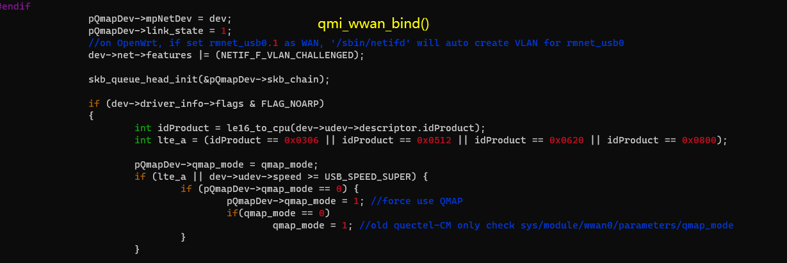

UsbNet
Net Interface Type can be configured with AT cmds.
AT+QCFG="usbnet"| Net Interface Type | LinuDriver | Dialup Way | Physical |
|---|---|---|---|
| rmnet/qmi/ndis at+qcfg="usbnet",0 | qmi_wwan&cdc_wdm
CONFIG_USB_NET_QMI_WWAN KernelVersion >= 3.4 | GobiNet | libqmi(Ubuntu)
uqmi(openWRT) quectel-CM(recommended way) AT$QCRMCALL=1,1 | IP Frame |
| ECM
a+qcfg="usbnet",1 automotive OpenLinux | CONFIG_USB_NET_CDCETHER | autoconnect | Ethernet Frame |
| mbim at+qcfg="usbnet",2 Win10 Notebooks,EM/E Serials | CONFIG_USB_NET_CDC_MBIM KernelVersion >= 3.9 | mbim protocol libmbim(Ubuntu) quectel-CM | MBIM Frame |
| rndis at+qcfg="usbnet",3 | CONFIG_USB_NET_RNDIS_HOST | autoconnect | Ethernet Frame |
Other Net type such as NCM/ACM interface works much same with ECM/RNDIS.
obj-$(CONFIG_USB_NET_CDC_NCM) += cdc_ncm.o
RMNET
QMI
There exsits qmi driver in the Linux Kernel from version 3.4.
It can be used on Quectel LTE modules. However, Quectel IP Multiplexing and IP Aggregation is not supported on that driver.
QMI will match interface 4 with itself.

GobiNet
You can choose between GobiNet and qmi_wwan (qmi_wwan_q). The GobiNet driver will pull DTR when the driver is loaded.
If you want to dial with the AT instruction, you need to set the qcrmcall_mode in the driver to 1.
If you need to dial with the AT instruction, modify the qcrmcall_mode in the GobiNet source code to 1.
AT instruction dialing does not support QMAP. If the driver turns on the QMAP function, the module cannot use AT command dialing.
| Please ask Quectel for the latest QMI and GobiNet drivers. |
Mailto: support@quectel.com
QMAP
QMAPs full name is QUALCOMM Multiplexing and Aggregation Protocol.
When using GobiNet or QMI_WWAN, only one Physical Network Card can be created by default, so only one PDN data call can be set up. However, multiple virtual Network Cards can be created by using IP multiplexing protocol over one Physical Network card, and customers can setup multiple PDN data calls.
When using GobiNet or QMI_WWAN, only one IP Packet in one URB can be transferred, so when there are high throughput and frequent URB interrupts, the Host CPU will become overloaded. However, IP aggregation protocol can be used to transfer multiple IP Packets in one URB with increased throughput by reducing the number of URB interrupts.
When QMAP disabled, GobiNet or QMI_WWAN directly transfer IP Packet over USB BUS. When QMAP enabled, GobiNet or QMI_WWAN transfer QMAP Packet over USB BUS.
Kernel Doc description: QMAP
EC21/EC25/EG06/EP06/EM06/EG12/EP12/EM12/EG16/EG18/EM20/RG500 all support QMAP.
Ex06/Ex12/EM20/Rx500Q will force to use QMAP.

[244838.067277] usbcore: registered new interface driver qmi_wwan_q
[244844.970420] usb 2-1.2: new high-speed USB device number 22 using sunxi-ehci
[244845.090167] usb 2-1.2: New USB device found, idVendor=2c7c, idProduct=0435
[244845.090193] usb 2-1.2: New USB device strings: Mfr=1, Product=2, SerialNumber=0
[244845.090212] usb 2-1.2: Product: LTE Module
[244845.090229] usb 2-1.2: Manufacturer: Quectel, Incorporated
[244845.129638] qmi_wwan_q 2-1.2:1.4: cdc-wdm0: USB WDM device
[244845.129666] qmi_wwan_q 2-1.2:1.4: Quectel modules work on RawIP mode
[244845.135800] qmi_wwan_q 2-1.2:1.4 wwan0: register 'qmi_wwan_q' at usb-sunxi-ehci-1.2, WWAN/QMI
device, 2e:75:af:df:48:50
[244845.140199] net wwan0: qmap_register_device wwan0.1
[244845.142132] net wwan0: qmap_register_device wwan0.2
[244845.143211] net wwan0: qmap_register_device wwan0.3
[244845.144309] net wwan0: qmap_register_device wwan0.4
[244845.144329] qmi_wwan_q 2-1.2:1.4: rx_urb_size = 4096
GobiNet Works much the same way. /* Test QMAP on GobiNet or QMI WWAN 0 - no QMAP 1 - QMAP (Aggregation protocol) X - QMAP (Multiplexing and Aggregation protocol) */ static uint __read_mostly qmap_mode = 4; module_param( qmap_mode, uint, S_IRUGO | S_IWUSR );
usb0.1 for data call setup on PDN-1
usb0.2 for data call setup on PDN-2
usb0.3 for data call setup on PDN-3
usb0.4 for data call setup on PDN-4
the dmesg log
[247365.213865] GobiNet: Quectel_WCDMA<E_Linux&Android_GobiNet_Driver_V1.5.0
[247365.214209] usbcore: registered new interface driver GobiNet
[247369.390423] usb 2-1.2: new high-speed USB device number 25 using sunxi-ehci
[247369.510166] usb 2-1.2: New USB device found, idVendor=2c7c, idProduct=0435
[247369.510193] usb 2-1.2: New USB device strings: Mfr=1, Product=2, SerialNumber=0
[247369.510212] usb 2-1.2: Product: LTE Module
[247369.510229] usb 2-1.2: Manufacturer: Quectel, Incorporated
[247369.560313] GobiNet 2-1.2:1.4 usb0: register 'GobiNet' at usb-sunxi-ehci-1.2, GobiNet Ethernet Device,
2e:75:af:df:48:50
[247369.561690] creating qcqmi0
[247369.563154] GobiNet::qmap_register_device usb0.1
[247369.564861] GobiNet::qmap_register_device usb0.2
[247369.566014] GobiNet::qmap_register_device usb0.3
[247369.567818] GobiNet::qmap_register_device usb0.4
[247379.851678] GobiNet::QMIWDASetDataFormat qmap settings qmap_enabled=5, rx_size=4096, tx_size=4096
ECM
Host side
CDC ECM driver is a universal standard for ECM interface, and does not require any modification to the kernel source code. You only need to configure the kernel
CONFIG_USB_USBNET=y
CONFIG_NETDEVICES=y
CONFIG_USB_NET_CDCETHER=y
kernel\drivers\net\usb\Makefile
obj-$(CONFIG_USB_NET_CDCETHER) += cdc_ether.o
The ECM interface is available on all standard modules of Quectel based on the Qualcomm platform. It features automatic dialing without any tools or AT commands. If the host is an Ubuntu PC, and the network card is configured as ECM, no operation may be required, and the Ubuntu PC can directly connect to the Internet.
If part of the network cannot be connected, the following steps may be required:
udhcpc -i usbX
Add 192.168.X.1 as gateway and DNS
Of course, the premise is that the module must be able to successfully register for the network, and the module itself can connect to the Internet (you can ping the public network using the debug port, or AT+QPING can return normally.)
Module side
echo ecm > /sbin/usb/compositions/usb_net_type
# cat /sys/class/android_usb/android0/functions
diag,serial,ecm,ffs
MBIM
(Only supported after Kernel 3.18) Related configuration items of CDC MBIM driver:
CONFIG_USB_USBNET=y
CONFIG_NETDEVICES=y
CONFIG_USB_NET_CDC_MBIM=y
kernel\drivers\net\usb
Makefile
obj-$(CONFIG_USB_NET_CDC_MBIM) += cdc_mbim.o
Kconfig
config USB_NET_CDC_MBIM
tristate "CDC MBIM support"
depends on USB_USBNET
select USB_WDM
select USB_NET_CDC_NCM
lsusb -t
|__ Port 4: Dev 15, If 3, Class=Vendor Specific Class, Driver=option, 480M
|__ Port 4: Dev 15, If 1, Class=Vendor Specific Class, Driver=option, 480M
|__ Port 4: Dev 15, If 8, Class=Audio, Driver=snd-usb-audio, 480M
|__ Port 4: Dev 15, If 6, Class=Audio, Driver=snd-usb-audio, 480M
|__ Port 4: Dev 15, If 4, Class=Communications, Driver=cdc_mbim, 480M
|__ Port 4: Dev 15, If 2, Class=Vendor Specific Class, Driver=option, 480M
|__ Port 4: Dev 15, If 0, Class=Vendor Specific Class, Driver=option, 480M
|__ Port 4: Dev 15, If 7, Class=Audio, Driver=snd-usb-audio, 480M
|__ Port 4: Dev 15, If 5, Class=CDC Data, Driver=cdc_mbim, 480M
RNDIS
Host side
It is not recommended to use RNDIS.
For Qualcomm modules, mainly EC2X modules, the RNDIS network card will use USB interface descriptors 0 and 1 by default, which is different from other interfaces that use interface 4 by default. This is introduced in the previous chapter USB Serial.
RNDIS for 5G modules such as RM500Q has not been tested yet. If there is a network requirement, it is recommended to use ECM instead.
##More about ECM/RNDIS
/etc/mobileap_cfg.xml LAN Configuration
<MobileAPLanCfg>
<EnableIPV4>1</EnableIPV4>
<EnableIPV6>1</EnableIPV6>
<GatewayURL>mobileap.qualcomm.com</GatewayURL>
<WlanMode>AP</WlanMode>
<WlanRestartDelay>1</WlanRestartDelay>
<MobileAPSTABridgeEnable>0</MobileAPSTABridgeEnable>
<HostAPDCfg>/etc/misc/wifi/hostapd.conf</HostAPDCfg>
<HostAPDEntropy>/data/entropy_file</HostAPDEntropy>
<STAModeHostAPDCfg>/etc/misc/wifi/sta_mode_hostapd.conf</STAModeHostAPDCfg>
<APIPAddr>192.168.225.1</APIPAddr>
<SubNetMask>255.255.255.0</SubNetMask>
<EnableDHCPServer>1</EnableDHCPServer>
<DHCPCfg>
<StartIP>192.168.225.20</StartIP>
<EndIP>192.168.225.60</EndIP>
<LeaseTime>43200</LeaseTime>
</DHCPCfg>
Module side
echo rndis > /sbin/usb/compositions/usb_net_type
# cat /sys/class/android_usb/android0/functions
diag,serial,rndis,ffs